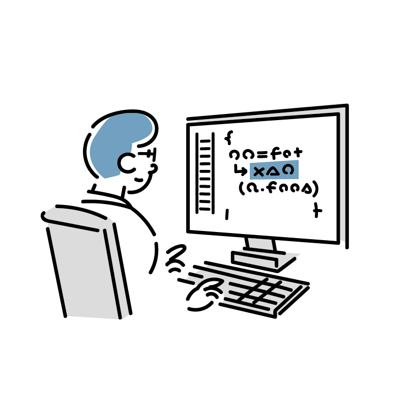

profile
about me
Kobayashi Yuta
- 1985年生まれ愛知県名古屋市出身。
大学を卒業後、約４０年続く実家の飲食店で５年間勤務 - 母の体調が悪くなってきたのを機に閉店
- その後、小さい頃から本が好きでご縁のあったアルバイト先の書店で正社員となり販売接客を中心に計４年間勤務
- 店内のレイアウト用にデザインを学んでいたところ、Webデザインに興味を持ち学習を始める。
- 退社し独学で２年ほどWebデザインやコーディングを学び日々学習中
- 得意なことは
- わからないことは納得いくまで調べることができる
- 接客業の経験を活かして話を聞き、コミュニケーションを取ること
career
-
愛知県内の大学を卒業後実家の飲食店で勤務
-
閉店後、名古屋市内の書店に入社。
接客販売や在庫管理を担当。 -
勤務先が閉店のため、同市内にある他書店に就職。接客販売やシフト管理、アルバイトの育成を中心に三店舗に渡り店舗運営などを経験。その中の業務の１つであった店内POPのデザインを学ぶうちにWebデザインに興味を持ち、書籍や動画による独学を初める。
-
退社しWebサイトの作成を２年ほど学習し現在に至る。
skills
- HTML / CSS
- PhotoshopやXDなどで作成したワイヤーフレームからHTMLやCSSを使ってマークアップができます。またCSSを記述する際はSassを使用しております。
- Java Script / jQuery
- JavaScriptやjQueryを使ってWebサイトに動きをつけることができます。基本的な文法は学習しましたので理解はでき、外部のライブラリを使用したパーツの製作もできます。
また最近ではReactの学習もしております。
- PHP
- WordPress用のテーマを作成する程度のPHPの文法は理解しています。
- MySQL
- 基本的なデータベースの操作や検索ができます。
- Word Press
- HTMLで作成したサイトをWord Press化し、更新、管理がしやすいようにすることができます。
また個人的なブログもWord Pressで運営しておりますので記事の更新や仕様には慣れております。
- Adobe XD
- ワイヤーフレームを作成するのに使用していますので基本的な使用はできます。
- Photoshop
- 画像の修正や編集、合成などの基本的な操作はできます。
- illustrator
- アイコンやロゴなどを作成する際に使用しており基本的な操作は可能です。
what i can do
- Webデザイン
- サイトマップの設計からデザインを作成し、それをもとにWebサイトを製作します。またタブレットやスマートフォンに対応させたレスポンシブデザインもできます。
- 
- コーディング
- ワイヤーフレームをもとに忠実に再現をすることを心がけています。またコードを書く際はわかりやすく、メンテナンスがし易いコードを書くように努めています。
- CMS化
- Word Pressなどに代表されるものでHTMLとCSSで作成されたサイトを自身で容易に管理、更新ができるようなサイトに変更することができます。
- コミュニケーション
- 接客業での経験を活かした話を傾聴力とコミュニケーションを取ることが得意です。